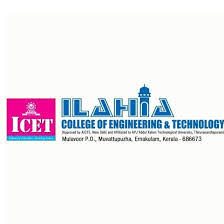

The US-India iCET: The Initiative on Critical and Emerging Technologies (iCET) is a high-level bilateral framework launched by the United States and India to deepen strategic technology cooperation and defense industrial integration. Co-led by the National Security Councils of both nations, it focuses on building trusted technology partnerships and resilient supply chains in fields like artificial intelligence (AI), semiconductors, quantum computing, space exploration, and next-generation telecommunications (5G/6G). The Academic Entrance Exam (India): The Integrated Common Entrance Test (ICET) is a popular state-level entrance examination conducted in Indian states like Andhra Pradesh (AP ICET) and Telangana (TG ICET). It serves as the primary qualifying test for graduates seeking admission into professional post-graduate courses, specifically Master of Business Administration (MBA) and Master of Computer Applications (MCA) programs, by testing candidates across analytical, mathematical, and communication abilities
